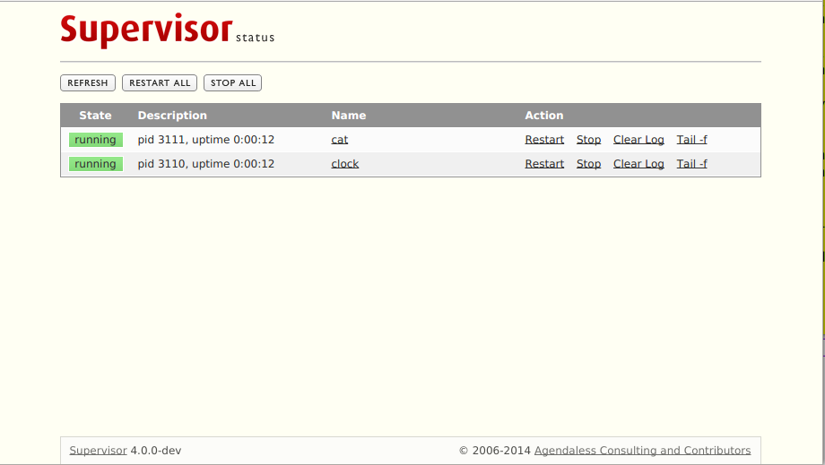

Using Supervisor For Fun And Profit
PyCon US 2015 (Montréal)
Presenter: Chris McDonough
Who Am I
Python OSS developer. Original author of Supervisor, Pyramid web framework, and author/maintainer of a bunch of other stuff. From Fredericksburg VA. Agendaless Consulting.
Who I Am Not
Primary maintainer of Supervisor is Mike Naberezny. I have contributed very little recently.
What Is Supervisor
Supervisor is a popular Python application that lets you control and monitor process state on UNIX-like systems (Linux, OS X, BSD).
What It Does
It's a program that runs programs.
Programs that it runs are not required to be Python programs.
Configuration-file-driven. A configuration file might represent the set of programs that must be run, in, for example a development environment for a project.
Kinda like systemd or upstart except it's meant to be per-project instead of "pid 1".
Allows you to control processes
- Via a web interface
- Via a command-line tool
- Programmatically via XML-RPC
Web interface
Basic supervisorctl commands
stop, start, restart, reload, status, tail, maintail, shutdown
More advanced supervisorctl commands
avail, update, add, reread, fg
More advanced supervisord.conf settings
numprocs, startsecs, stopsignal
RPC API
Everything that can be done via supervisorctl can be done via the XML-RPC API.
Restarts programs when they crash.
Understanding process states, and automatic restart of crashed processes.
FAQ: Programs run under supervisor must not daemonize themselves
In contrast to god or monit. Supervisor does the daemonization.
Event Listeners
Event listeners are programs that take tokens from supervisor on stdin and respond on stdout.
Started under supervisor like any other program, except they use the [event-listener] section header instead of the [program] header.
When they receive an event from supervisor, they can send email, send an SMS, or use the RPC API to check for further status.
httpok, crashmail, memmon
Supervisor In Real-World App Deployments
Supervisor config snippets often go into system-level /etc/supervisord.d
Ansible/SaltStack/Puppet/whatever often used to lay down supervisord snippets.
Sometimes used in the Docker community to start multiple programs inside a container.
History
Since 2004 or so, has had 3 major releases, and many minor ones.
Latest stable is in the 3-series.
Future
Sometime this year, Supervisor 4.0 will be released: Py3 & signal command.
Master works on Py3 now and has a signal command.
Replaced by systemd or something else? That'd be nice.